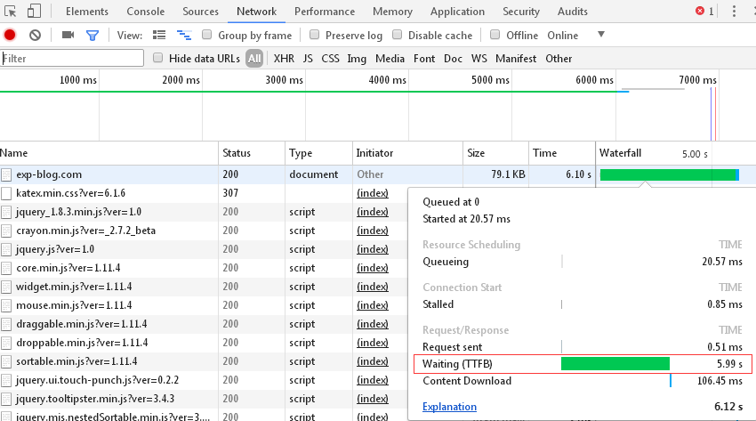
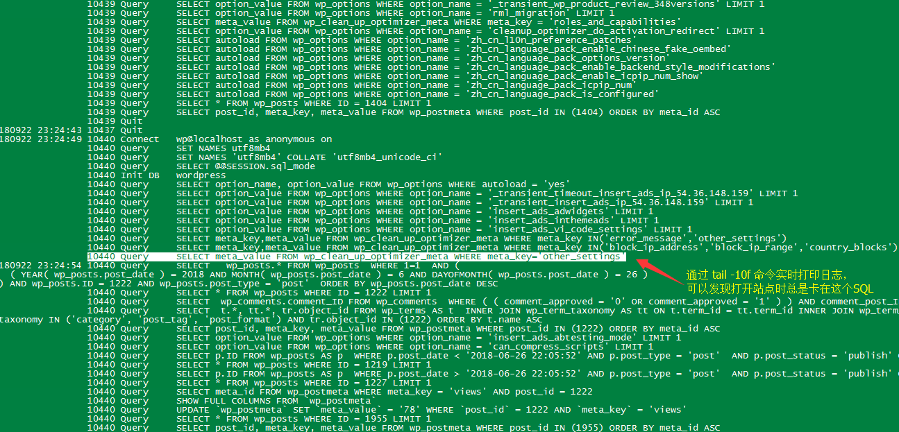
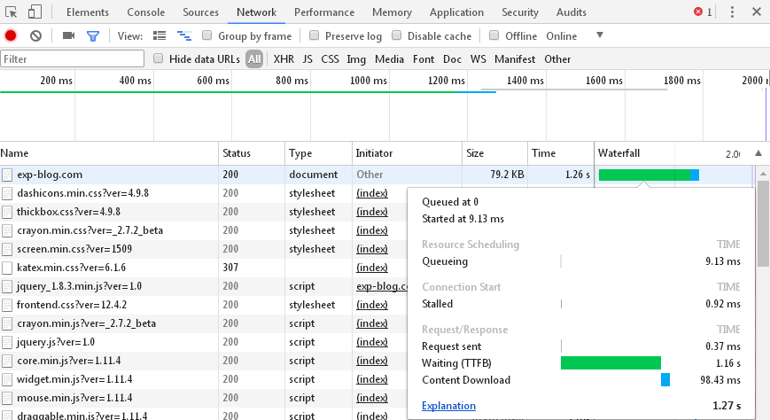

WP站点的TTFB过长？记一次TTFB的优化过程
问题
最近发现打开网站的响应时间变得很长，在浏览器通过F12打开控制台发现TTFB高达6秒。
而且经测试发现，不仅站点所有页面打开时的TTFB都需要6秒，连打开站点后台的TTFB也是固定6秒。

科普
首先简单解析下，什么是TTFB？
TTFB (Time To First Byte)，是最初的网络请求被发起到从服务器接收到第一个字节这段时间，它包含了TCP连接时间，发送HTTP请求时间和获得响应消息第一个字节的时间。
推测
查询很多处理TTFB过慢文章，很多都是说减少DNS、使用CDN、提高服务器性能、甚至还与各个地区访问服务器的延迟状态等等方法。
但是经过初步测试，我判断并不是上面的原因引起的，这是因为：
- 直接通过IP访问站点（即跳过DNS解析），TTFB依旧是6秒
- 把站点展示的内容（图文数据）完全克隆到另一台测试服务器（性能比正式服务器低），TTFB只有不到1秒
- 我的测试服务器和正式服务器是同一地区的，而测试服能达到秒级响应，说明不是地域问题
但有个地方引起我的关注：
正式服务器前后台的TTFB均是6秒，克隆内容后的测试服务器TTFB不到1秒
因此我初步分析，很有可能在我打开站点的时候，站点做了某个行为，这个行为不论在我打开站点前台还是后台都会触发的，而这个行为跟我站点的展示内容无关。
分析
那么如何定位到这个行为是什么就是关键了。
考虑到TTFB的特点，这个行为要么发生在“TCP连接时间”，要么发生在“发送HTTP请求时间和获得响应消息第一个字节的时间”。但是发现站点的ping延迟并不高，因此嫌疑最重的就是后者。
但是就一般而言，站点收到HTTP请求并不会执行什么特殊操作，但是为了展示界面，一定会做的就是数据库访问，因此为了进一步定位是否为数据库导致的，我需要知道在访问网站的同时，站点执行了哪些SQL，每条SQL耗时多长。
为此，查看数据库日志是最直接的。
一般情况下，WP使用的是 mysql/mariadb ，数据库日志默认是关闭的，因此需要先激活日志功能：
使用root用户登陆到数据库后，检查“数据库日志”是否开启：
SHOW VARIABLES LIKE 'general%';
# 这份日志会保存到数据库的安装目录， Centos7默认的目录是 /var/lib/mysql/
+------+-----------+
| Variable_name | Value |
+------+-----------+
| general_log | OFF |
| general_log_file | VM_211_224_centos.log |
+------+-----------+
若为OFF，则开启之（这个选项的作用是把所有SQL操作打印到日志）：
SET GLOBAL general_log='ON';
# 当调试完毕后记得关闭之，否则太耗服务器资源了
另外，还有一个相关的“慢查询日志”，检查是否开启：
SHOW VARIABLES LIKE '%slow_query_log%';
# 这份日志会保存到数据库的安装目录， Centos7默认的目录是 /var/lib/mysql/
+---------+----+
| Variable_name | Value |
+---------+----+
| slow_query_log | OFF |
| slow_query_log_file | VM_211_224_centos-slow.log |
+---------+----+
若为OFF，则开启之（这个选项的作用是把执行时间超过一定数值的SQL打印到日志）：
SET GLOBAL slow_query_log='ON';
# 当调试完毕后记得关闭之，否则太耗服务器资源了
无需重启数据库，直接刷新站点，发现 VM_211_224_centos.log 日志有内容，VM_211_224_centos-slow.log日志无内容（当然这是针对我的情况而言，mysql/mariadb默认超过10秒的SQL才是慢查询，后者没日志很可能就是因为并不存在这类SQL）。
虽然 VM_211_224_centos.log 日志有内容，但也仅仅是一股脑把所有SQL列印出来而已，并不能反映每条SQL的执行时长。
但是这里可以通过tail -f实时直播日志的打印，以判断执行哪些SQL时会有停顿：
tail -10f /var/lib/mysql/VM_211_224_centos.log

刷新网站后，发现日志只在这个SQL执行的时候出现卡顿：
SELECT meta_value FROM wp_clean_up_optimizer_meta WHERE meta_key='other_settings'
我马上就发现，wp_clean_up_optimizer_meta这张表是属于之前安装的数据库优化插件【Clean Up Optimizer】的。检查这张表的数据，存储了约4000条recent_login_data，而这些数据记录的是近期发生过的登陆行为，且含有不少长文本：
select * from wp_clean_up_optimizer_meta where meta_key = 'recent_login_data';
检查插件【Clean Up Optimizer】，确实有记录近期尝试登陆的用户信息的功能，且这个功能无法关闭。
而我相信任何一个作为WP的站长，都很清楚每天被大量机器人尝试登陆自己的站点已经不是什么鲜为人知的秘密。
为此带来的问题就是wp_clean_up_optimizer_meta表会因为这些无效登陆而日益膨胀。
虽然我不清楚这个插件有什么理由需要在每次打开站点页面时都去查询这张表，但是任由这张表去膨胀而不加约束、甚至不提供功能开关、还不加索引查询，都是很蠢的行为，而这正是导致这一系列问题的元凶。
于是，我停用了这个插件，现在打开任意页面，TTFB都降低到秒级了。

总结
需知道，每个站点TTFB变慢都可能有其特殊原因，并不能一概而论地去烦恼DNS、CDN等问题。
文本只是根据我的经验，提供一个排查思路，仅供参考。
最后，我给这个插件的作者发了一封邮件，这个事情就这么解决了。
但是讽刺的是，作为一个数据库优化的插件，却因为数据库的问题成为了网站访问延迟的元凶，看来我们也不能太过依赖一些便利的工具了。但我又转念一想，杀软和病毒，也不恰恰正是因为这种相互依赖关系才得以共存么？呵。